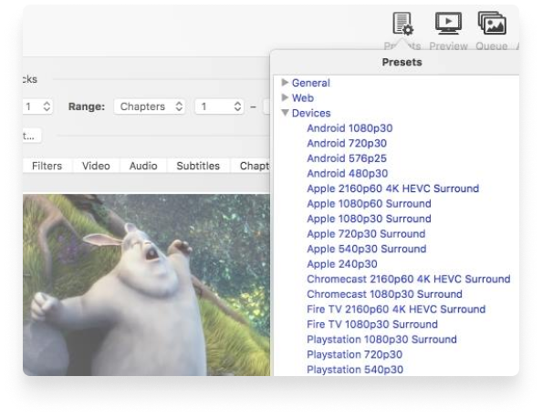
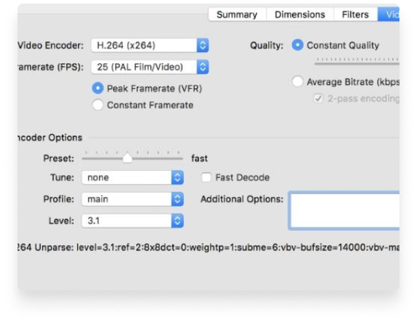
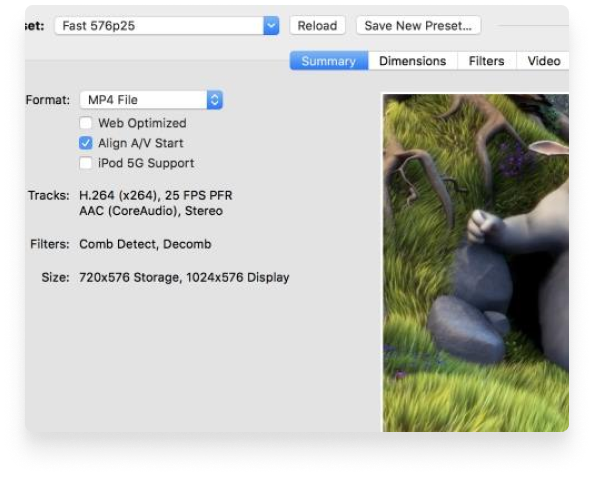

Just a few reason you will love HandBrake
- 
-
Optimised for easy use
Built-in Device Presets
Get started with HandBrake in seconds by choosing a profile optimised for your device, or choose a universal profile for standard or high quality conversions. Simple, easy, fast. For those that want more choice, tweak many basic and advanced options to improve your encodes.
-
Modern video formats
Supported Input Sources
Handbrake can process most common multimedia files and any DVD or BluRay sources that do not contain any kind of copy protection.
Outputs- File Containers: .MP4(.M4V) and .MKV
- Video Encoders: H.265 (x265 and QuickSync), H.264(x264 and QuickSync), H.265 MPEG-4 and MPEG-2, VP8, VP9 and Theora
- Audio Encoders: AAC / HE-AAC, MP3, Flac, AC3, or Vorbis
- Audio Pass-thru: AC-3, E-AC3, DTS, DTS-HD, TrueHD, AAC and MP3 tracks
- 
- 
-
With you in mind
Even more features for you
- Title / chapter and range selection
- Batch Scan and Queueing of encodes
- Live Static and Video Preview
- Support for VFR and CFR
- Chapter Markers
- Subtitles (VobSub, Closed Captions CEA-608, SSA, SRT)
- Constant Quality or Average Bitrate Video Encoding
- Video Filters: Deinterlacing, Decomb, Denoise, Detelecine, Deblock, Grayscale, Cropping and scaling